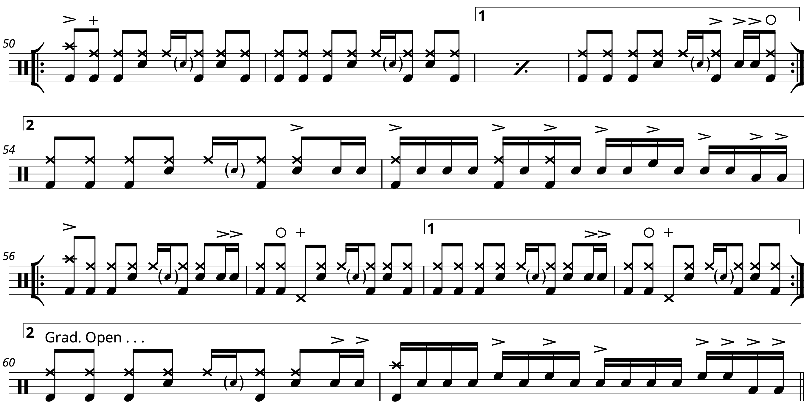

Transcription: “Like Eating Glass” — Matt Tong with Bloc Party

If the Niners had made it to the Super Bowl, I may have taken the week off, although lately, I’ve been getting my sports fill from the Olympics anyway.
Today, I’ll add to my eclectic (and admittedly haphazard) collection of transcriptions. I have a WIP of a torch song from the 70s, but I couldn’t finish it in time for Valentine’s day weekend. This song at least has some romantic tinges to it.
The tune is “Like Eating Glass” by Bloc Party. My dad and I discovered Bloc Party when we stumbled into some sort of BBC music special 15+ years ago. This is the closest thing I could track down, but I honestly can’t remember if it’s the same performance, since it happened before the album even came out. I do remember being seriously impressed by the drumming on the album version. This was one of those moments where I first started to pay attention to what makes a good drum part.
The drummer on this album is Matt Tong who ended up leaving the band in 2013, with some vague explanations after the fact. It’s a bummer that he left, but he seems to be keeping busy. A lot of die–hard Bloc Party fans will tell you that the band was never the same after the first two albums.
Matt really has a great drum part for this number. The song has a very interesting structure: after a lengthy intro, there’re two verses, an instrumental, a third verse, then the chorus, a bridge, chorus, and outro.
Listening to the grooves, you can hear a lot of pop–punk and trash energy on Matt’s playing. He uses two different grooves with similar for verses 1 and 2, combining them together for the third verse:
Matt backs off a bit during the hook, but the song still has some serious drive — to me, it sounds much faster than it actually is. I’m quite a fan of the bridge, which has some disorienting space around the hits. Notice how the different offbeat phrases alternate between starting on the kick and starting on the snare:

Not much more to say about this one, but it’s a killer song, and drumming along to it is a blast.
“Like Eating Glass” on Songwhip.
Posted on February 13, 2022
Tags: 2022 • Transcription • Bloc Party • Matt Tong